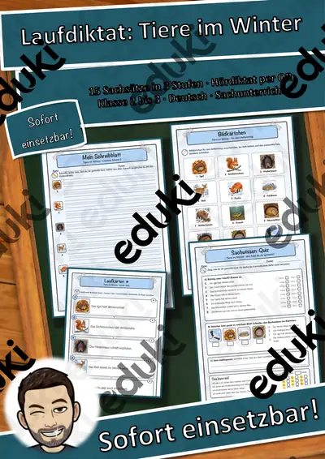

Rechtschreibung und Diktate: Arbeitsblätter für Klasse 1–8 (Deutsch)
Rechtschreibung bleibt eine Daueraufgabe vom ersten bis zum zehnten Schuljahr. Der Unterricht arbeitet mit Regeln, Merkwörtern und Strategien wie Ableiten, Verlängern und Nachschlagen.
Die Begriffsliste dieser Einheit: Groß- und Kleinschreibung, Dehnung und Schärfung, das oder dass, Vorsilben, Laufdiktat und Wörterbucharbeit.
Die Lehrpläne der Länder sehen das Thema im Fach Deutsch vor, in der Regel in den Klassen 1 bis 8. Als Ziel gilt: die Schülerinnen und Schüler wenden Rechtschreibstrategien an und überprüfen eigene Texte.
Im Alltag einer Lehrkraft zählt, dass Material sofort einsatzbereit ist: Die Blätter zu Rechtschreibung und Diktate greifen Dehnung und Schärfung, das oder dass und Vorsilben auf, lassen sich ausdrucken und kommen mit Lösungen, damit die Vorbereitung kurz bleibt. Für Klasse 8 bis 10 kommen die Prüfungstrainings als kompakte Vorbereitung auf Klassenarbeiten hinzu.
Aus unserem Katalog gehören 10 Materialien zu diesem Thema, darunter Laufdiktat-Werkstatt Materialpaket: 3, Schreibroute Herbst: Laufdiktat und Satzbau in und Laufdiktat Mein Körper. Der Bestand umfasst 1 Prüfungstraining und reicht über Klasse 1–8. Ein Laufdiktat als Partnerübung bringt Bewegung ins Üben und trainiert genaues Abschreiben.
Das gehört zum Thema
Passende Arbeitsblätter und Materialpakete

Laufdiktat-Werkstatt Materialpaket: 3 Themenhefte Sachwissen – 45 Sätze × 3 Stufen, Lineaturen, Quiz, Hördiktate (Klasse 1–4)

Groß- und Kleinschreibung – Prüfungstraining Deutsch (Klasse 8)

Schreibroute Herbst: Laufdiktat und Satzbau in drei Stufen

Laufdiktat Mein Körper – 15 Sachsätze in 3 Stufen, 3 Lineaturen, Quiz, Hördiktat per QR (Klasse 1–3)

Laufdiktat Tiere im Winter

Laufdiktat Tiere im Winter – 15 Sachsätze in 3 Stufen, 3 Lineaturen, Quiz, Hördiktat per QR (Klasse 2–3)

Laufdiktat Unser Sonnensystem – 15 Sachsätze in 3 Stufen, 3 Lineaturen, Quiz, Hördiktat per QR (Klasse 3–4)

Adjektive-Rechtschreibung Adjektive (auch Homeschooling)

Adjektve Rechtschreibung, Adjektive Nomen zuordnen (auch Homeschooling)

Rechtschreibung Vorsilben
Häufige Fragen
Für welche Klassenstufe passen die Arbeitsblätter zu Rechtschreibung und Diktate?
Der Schwerpunkt liegt auf Klasse 3; insgesamt deckt die Auswahl (10 Titel) Klasse 1–8 ab. In der Beschreibung jedes Materials steht die empfohlene Stufe.
Welche Inhalte decken die Materialien zu Rechtschreibung und Diktate ab?
Inhaltlich reicht die Auswahl von Groß- und Kleinschreibung über Dehnung und Schärfung und das oder dass bis zu Laufdiktat; Details stehen bei den einzelnen Materialien.
Wie setze ich Rechtschreibung und Diktate im Unterricht ein?
Beginnen Sie mit einem Einstieg zu Groß- und Kleinschreibung und ergänzen Sie nach Bedarf. Ein Laufdiktat als Partnerübung bringt Bewegung ins Üben und trainiert genaues Abschreiben.
Mehr Material nach Fach und Klasse
- Alle Materialien Deutsch
- Arbeitsblätter Deutsch Klasse 1
- Arbeitsblätter Deutsch Klasse 2
- Arbeitsblätter Deutsch Klasse 3
- Arbeitsblätter Deutsch Klasse 4
- Arbeitsblätter Deutsch Klasse 5
- Arbeitsblätter Deutsch Klasse 6
- Arbeitsblätter Deutsch Klasse 7
- Arbeitsblätter Deutsch Klasse 8
- Unterrichtsmaterial Klasse 1
- Unterrichtsmaterial Klasse 2
- Unterrichtsmaterial Klasse 3
- Unterrichtsmaterial Klasse 4
- Unterrichtsmaterial Klasse 5
- Unterrichtsmaterial Klasse 6
- Unterrichtsmaterial Klasse 7
- Unterrichtsmaterial Klasse 8
Verwandte Lehrplanthemen
- Wortarten (Deutsch, Klasse 2–7)
- Jahreszeiten (Sachunterricht, Klasse 1–4)
- Lesen und Leseverstehen (Deutsch, Klasse 1–6)
- Märchen (Deutsch, Klasse 1–5)
- Bewerbung und Praktikum (Deutsch, Klasse 8–10)